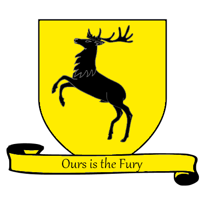

Maison Baratheon

La maison Baratheon est la plus récente des Grandes maisons des
Sept Couronnes, et gouverne la région des Terres de l'Orage
(The Stormlands). Fondée par le frère bâtard du premier roi
Targaryen, Orys Baratheon, son siège se situe à Accalmie
(Storm's End) que gère Renly Baratheon, alors que sa branche
royale est à la capitale Port-Réal (King's Landing) avec
Robert Baratheon, et la branche cadette de Stannis Baratheon se
tient aussi à Peyredragon (Dragonstone). Son blason est un cerf
noir sur champ doré, et sa devise est « Nôtre est la fureur » («
Ours is the Fury »). Les bâtards nés dans les terres de
l'Orage sont nommés « Storm ». Le blason et la devise des
Baratheon dérivent de ceux de la défunte maison Durrandon, la
lignée royale des « Rois de l'Orage » qui régnaient sur les
Terres de l'Orage jusqu'à l'arrivée des Targaryen,
dont Orys Baratheon qui tua le dernier Roi de l'Orage et
épousa sa fille, faisant du blason et de la devise des Durrandon
ses propriétés.